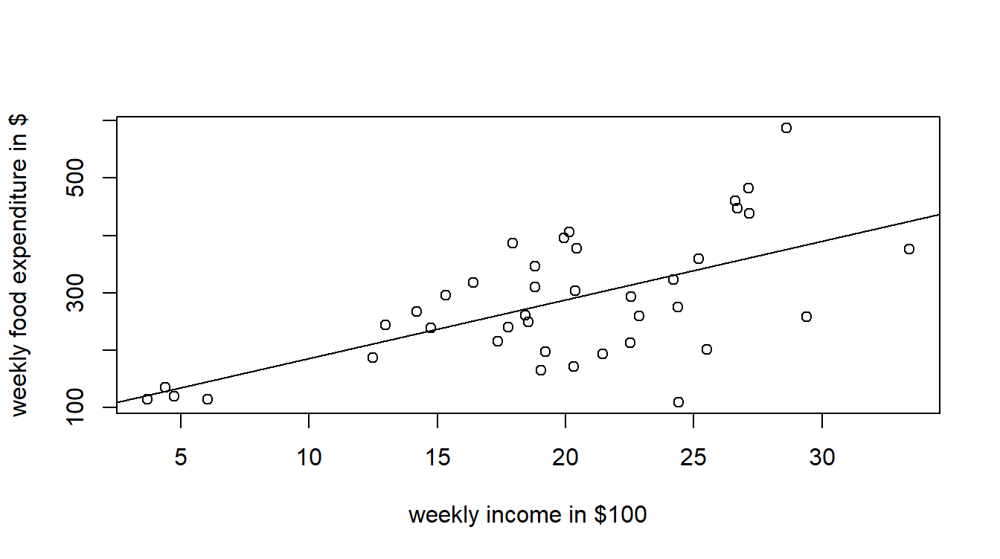
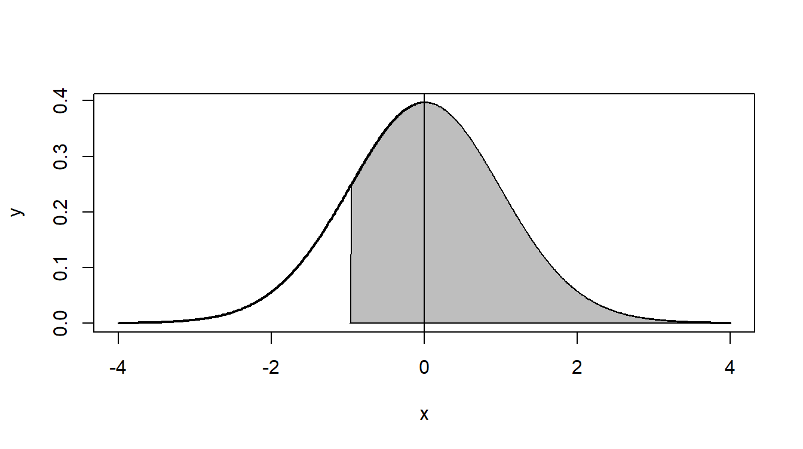

Simple Linear Regression
Introduction
In this tutorial, we will estimate a simple linear regression, make a scatter plot of the data that includes the regression line, and calculate a predicted value for the dependent variable.
Importing data into R
Lecture
Explanition
For this tutorial, we will be using the food data from PoE that can be found at http://www.principlesofeconometrics.com/poe5/poe5data.html. To make it easier to access this data, I have set up a shortened URL: http://tiny.cc/poe-data. Thus, to load food.csv into R, use the following URL: http://tiny.cc/poe-data/food.csv. We will use the read.csv() function along with the url() function as follows.
food <- read.csv(url("http://tiny.cc/poe-data/food.csv"))<- is the assignment operator. It is used to store something “into” a an object or variable. For now, think of an object as a box, and <- puts stuff in the box. So in the code fragment above, we are storing the data into an object called food.
food is a special object called a data frame. You can think of a data frame as one page of an workbook from a spreadsheet program.
We need to use the url() function because we are accessing the data file from the internet. If you access data locally, you do not need the url() function.
You try
Load the food data set into a data frame named food
Estimate a linear model
Lecture
Explanition
In r, the lm() function is used to estimate linear regression models. The “lm” stands for linear model. lm() used by itself does not show any output; thus, it is useful to give the model a name, such as mod1, then show the results using summary(mod1).
mod1 <- lm(food_exp ~ income, data = food)
summary(mod1)
Call:
lm(formula = food_exp ~ income, data = food)
Residuals:
Min 1Q Median 3Q Max
-223.025 -50.816 -6.324 67.879 212.044
Coefficients:
Estimate Std. Error t value Pr(>|t|)
(Intercept) 83.416 43.410 1.922 0.0622 .
income 10.210 2.093 4.877 1.95e-05 ***
---
Signif. codes: 0 '***' 0.001 '**' 0.01 '*' 0.05 '.' 0.1 ' ' 1
Residual standard error: 89.52 on 38 degrees of freedom
Multiple R-squared: 0.385, Adjusted R-squared: 0.3688
F-statistic: 23.79 on 1 and 38 DF, p-value: 1.946e-05You try
Regress food_exp on income and store the model in an object named mod1 then display a summary of the model.
Plot the model
Lecture
Explanition
It is always a good idea to plot the data along with the regression line. The plot() function and do this, and the abline() function add the regression line. abline() requires the coefficients. We can also retrieve the coefficients using the coef() function.
b1 <- coef(mod1)[[1]]
b2 <- coef(mod1)[[2]]
plot(food$income, food$food_exp,
xlab="weekly income in $100",
ylab="weekly food expenditure in $",
type = "p")
abline(b1,b2)
Notice that the scatter plot indicates a non-linear relationship between food expenditure and income. Thus, the linear model we have estimated is likely inappropriate. We will estimate a better model in a later lesson.
You try
Retrieve the regression line coefficients and then plot the data and regression line.
Prediction
Lecture
Explanition
The predict() function can be used in R to calculate the predicted value of the dependent variable, food_exp for given values of income, as well as the confidence and prediction intervals for that estimate. Let’s predict the level of expenditure on food, food_exp, when income equals 20.
First, we need to create a new data frame that contains the values of the dependent variable for which we want a prediction. The function data.frame() is used to create the new data frame.
new.data <- data.frame("income" = 20)Second, use the predict() function to create objects with the confidence interval and the prediction interval.
predict(mod1, newdata=new.data, interval="confidence", level=0.95)| fit | lwr | upr |
|---|---|---|
| 287.6089 | 258.9069 | 316.3108 |
predict(mod1, newdata=new.data, interval="predict", level=0.95)| fit | lwr | upr |
|---|---|---|
| 287.6089 | 104.1323 | 471.0854 |
You try
Calculate the predicted value of food_exp, as well as the confidence and prediction intervals for that estimate, when income is equal to 15.
Prediction Probability
Lecture
Explanition
It can be quite useful to determine the probability of a range of events rather than a single value. For example, we might want to predict the probability that a household with an income of 20 will spend at least $200 dollars per week on food.
This sections gets a bit technical, but I will provide you with a function that you can cut and past into your analysis that makes answering questions like the one above much easier.
Some theory
The estimate of \(y\), i.e. \(\hat{y}\), is a random variable with a student’s t distribution. So we can use pt() to estimate the probably of an actual realization of \(y\) being within a given range.
We first need to calculate a \(t-stat\) for a value that is either the max or min of the given range. This \(t-stat\) can be found with the equation below.
\[ t-stat = \frac{value - \hat{y}}{ standard\ error\ of\ prediction } \]
Unfortunately, R dose not provide an easy way to access the standard error of prediction. So I have written two functions predict.prob () and predict.plot () to make this procedure easier. Those two function are included in the next tab. You do not need to worry about understanding the function. You can simply cut and past the functions into you own projects.
Calculate the probibility
Here we will predict the probability that a household with an income of 20 will spend at least $200 dollars per week on food. Recall that we estimate a model of food expenditure called mod1.
First we will use predict.prob() to find both the probability of food expenditure being greater than $200 and the actual prediction of food expenditure.
mod1.prod <- predict.prob(mod1,
new.data = data.frame("income"=20),
alpha = 0.05,
alternative <- "greater",
value <- 200)
kable(mod1.prod, digits = 3, align = "l")| value | prob | alternative | fit | upr | lwr | df | cv | se | t.stat |
|---|---|---|---|---|---|---|---|---|---|
| 200 | 0.83 | greater | 287.609 | 471.085 | 104.132 | 38 | 2.024 | 90.633 | -0.967 |
Next, you can use predict.prob() to visualize the probability we just estimated. The horizontal axis is measured in the same scale as the \(t-score\), thus the zero coresponds to the predicted value of \(y\), and the shading corresponds to the
predict.plot(mod1.prod)
Prediction Functions
predict.prob ()
predict.prob <- function(lmod,
new.data,
alpha=0.05,
alternative="greater",
value)
{
prediction <- predict(lmod,
newdata = new.data,
interval="predict",
level =1-alpha,
se.fit = T)
cv <- qt(p=alpha/2, df = prediction$df, lower.tail = FALSE)
se <- (prediction$fit[,"upr"] - prediction$fit[,"fit"])/cv
t.stat <- (value-prediction$fit[,"fit"])/se
ret = data.frame("value"=value,
"prob"=pt(q=t.stat,
df=prediction$df,
lower.tail = (alternative=="less")),
"alternative"=alternative,
"fit"=prediction$fit[,"fit"],
"upr"=prediction$fit[,"upr"],
"lwr"=prediction$fit[,"lwr"],
"df" = prediction$df,
"cv" = cv,
"se" = se,
"t.stat" = t.stat
)
return(ret)
}predict.plot()
predict.plot <- function(prediction){
x=seq(-4,4,length=400)
y=dt(x, df=prediction$df)
t = ifelse((prediction$alternative=="less"),-1,1)
x1=seq(t*4,prediction$t.stat,length=400)
y1=dt(x1, df=prediction$df)
plot(x,y,type="l", lwd=2, col="black")
polygon(c(4,prediction$t.stat,x1),c(0,y1,0),col="gray")
abline(v=0)
}You try
Instructions here
Summary of all code
# Packages
library(knitr)
# Functions
predict.prob <- function(lmod,
new.data,
alpha=0.05,
alternative="greater",
value)
{
prediction <- predict(lmod,
newdata = new.data,
interval="predict",
level =1-alpha,
se.fit = T)
cv <- qt(p=alpha/2, df = prediction$df, lower.tail = FALSE)
se <- (prediction$fit[,"upr"] - prediction$fit[,"fit"])/cv
t.stat <- (value-prediction$fit[,"fit"])/se
ret = data.frame("value"=value,
"prob"=pt(q=t.stat,
df=prediction$df,
lower.tail = (alternative=="less")),
"alternative"=alternative,
"fit"=prediction$fit[,"fit"],
"upr"=prediction$fit[,"upr"],
"lwr"=prediction$fit[,"lwr"],
"df" = prediction$df,
"cv" = cv,
"se" = se,
"t.stat" = t.stat
)
return(ret)
}
predict.plot <- function(prediction){
x=seq(-4,4,length=400)
y=dt(x, df=prediction$df)
t = ifelse((prediction$alternative=="less"),-1,1)
x1=seq(t*4,prediction$t.stat,length=400)
y1=dt(x1, df=prediction$df)
plot(x,y,type="l", lwd=2, col="black")
polygon(c(4,prediction$t.stat,x1),c(0,y1,0),col="gray")
abline(v=0)
}
# Code
## Load Data
food <- read.csv(url("http://tiny.cc/poe-data/food.csv"))
## Estimate Model
mod1 <- lm(food_exp ~ income, data = food)
summary(mod1)
## Plot Model
b1 <- coef(mod1)[[1]]
b2 <- coef(mod1)[[2]]
plot(food$income, food$food_exp,
xlab="weekly income in $100",
ylab="weekly food expenditure in $",
type = "p")
abline(b1,b2)
# Make Predictions with the Model
new.data <- data.frame("income" = 20)
predict(mod1, newdata=new.data, interval="confidence", level=0.95)
predict(mod1, newdata=new.data, interval="predict", level=0.95)
# Make Probability Predictions
mod1.prod <- predict.prob(mod1,
new.data = data.frame("income"=20),
alpha = 0.05,
alternative <- "greater",
value <- 200)
kable(mod1.prod, digits = 3, align = "l")
# Plot Probability Predictions
predict.plot(mod1.prod)You did it!
In the next tutorial, we will learn about accessing Goodness-of-Fit. The next lesson is available here: https://logan-kelly.shinyapps.io/4-2_GoF/